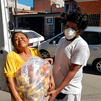
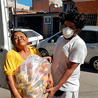
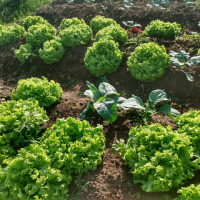
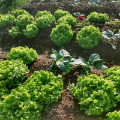
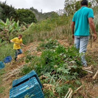
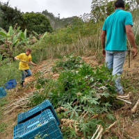

Ajude essa causa com a sua doação
Saiba o impacto da sua doação:
🍀Com R$ 35 reais, você contribui para a marmita de 10 pessoas
🍀Com R$ 70 reais, a marmita de 20
🍀Com R$ 350 reais, a marmita de 100!
Mas qualquer valor é bem vindo.
🍀Com R$ 35 reais, você contribui para a marmita de 10 pessoas
🍀Com R$ 70 reais, a marmita de 20
🍀Com R$ 350 reais, a marmita de 100!
Mas qualquer valor é bem vindo.
A partir do contato com agricultores familiares na região de São Luís do Paraitinga observamos que a interrupção da merenda escolar nas escolas públicas e feiras locais atingiram esses pequenos produtores rurais, que perderam repentinamente a forma de escoar seus produtos. Da vontade de conectar esses produtos agroecológicos com as famílias em estado de vulnerabilidade nas grandes cidades em decorrência da crise do COVID-19 nasceu o projeto Pontes da Terra. Arrecadamos dinheiro com o qual compramos parte da produção desses agricultores e levamos como doação para organizações parceiras que atuam na distribuição desses alimentos para pessoas em situação de rua e diferentes comunidades no Estado de São Paulo.

 



 

 
